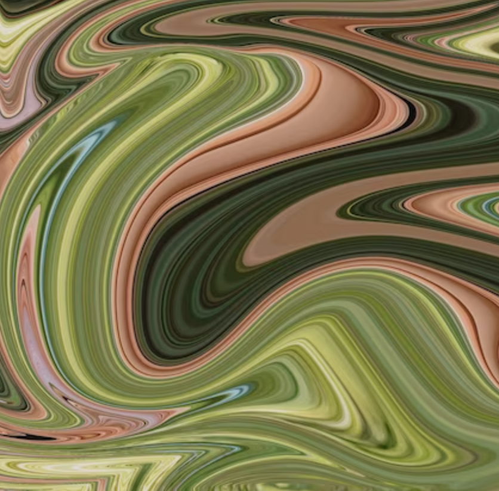

𝘉𝘳𝘪𝘥𝘨𝘪𝘯𝘨 𝘋𝘳𝘦𝘢𝘮𝘴 𝘢𝘯𝘥 𝘙𝘦𝘢𝘭𝘪𝘵𝘺 2-Unsettling Distortion 3-Final Product
Bridging Dreams and Reality: 𝘈 𝘚𝘦𝘭𝘧-𝘗𝘰𝘳𝘵𝘳𝘢𝘪𝘵
Drawing Inspiration from Salvador Dali's "The Persistence of Memory", I aim to explore between dreams and reality.
Dali's iconic melting clocks inspired me to challenge, what at the time was my limited artistic expression-to make
artworks to look "pretty."
I wanted to explore on using distortion, surrealism, and unconventional styles to create the concept of "physical change" to illustrate the everychanging elements when we dream.
I wanted to explore on using distortion, surrealism, and unconventional styles to create the concept of "physical change" to illustrate the everychanging elements when we dream.
The Unsettling Distortion (process)

Video Filters
as reference:
In the start of the painting, I played around with "Photo Booth" on my laptop. The distortion of my features reminded me of the imagery I had when dreaming, thus, leading into the start of this painting.
as reference:
In the start of the painting, I played around with "Photo Booth" on my laptop. The distortion of my features reminded me of the imagery I had when dreaming, thus, leading into the start of this painting.

Liquidfying
Technique:
I explored the "Liquidfying" technique to elongate and distort the figure to create alien-like elements in this self-portrait, emphasizing the disorientation and complexity of dreams.
Technique:
I explored the "Liquidfying" technique to elongate and distort the figure to create alien-like elements in this self-portrait, emphasizing the disorientation and complexity of dreams.
The Fusion of Art Styles
For this painting, I tried a fusion of artistic styles, transitioning from realism to surrealism.
The semi-realism captures intricate details, such as my own facial features and texture, juxtaposed with the surreal elements drawn
from my dreams as refrence.

For me, "Bridging Dreams and Reality" aim to challenges viewers to ponder
the profound and complex relationship between dreams and reality,
a theme that has captivated myself for a long time.
Conclusion
My personal journey is reflected in this surreal self-portrait, and it prompts a question:
how might we artistically express the other senses experienced in dreams? (sneak peak to next entry)
Smell, taste, and the tactile aspects of dreaming remain uncharted territories for artistic exploration.
Can the sensations of a dream be captured as vividly as the distorted visage in this piece? The answer lies in the infinite creative potential of my mind, a realm where dreams reference and reshape our perception of reality.